The Mathematical & Disciplinary Bedrock
Before algorithms compute or silicon burns kilowatts, artificial intelligence rests on five disciplinary pillars, three distinct logics of scientific reasoning, regression analysis, Bayesian belief-updating, and Claude Shannon's information theory.
- 5 Pillars & 3 Logics: AI engineering synthesizes Computer Science, Mathematics, Neuroscience, Cognitive Psychology, and Ethics, operating across First Principles (deduction), Deep Learning (induction), and Embeddings (analogy).
- Regression & Optimization: Maps continuous inputs to predictions via linear formulation ($y = wx + b$) minimized by MSE Loss, or bounded classification probabilities via the non-linear Sigmoid activation ($\sigma(z)$).
- Bayesian Updating & Base-Rate Fallacy: Rare conditions mandate separating prior prevalence $P(C)$ from test sensitivity $P(+ \mid C)$; even with 90% accuracy, low base rates cause false positives to dominate ($P(C \mid +) \approx 9.2\%$).
- Information Theory as Learning Engine: Next-token pre-training in neural networks is formally the mathematical minimization of Shannon Cross-Entropy $H(P, Q)$ to drive KL Divergence $D_{KL}(P \parallel Q)$ toward zero.
The Five Disciplinary Pillars
A resilient AI system requires literacy across five intersecting disciplines:
- Computer Science: Algorithms, data structures, and computational complexity.
- Mathematics & Statistics: Linear algebra, multivariate calculus, and probability distributions.
- Neuroscience: Biological inspiration for receptive fields and distributed representations.
- Cognitive Psychology: Mental models, memory hierarchies, and human reasoning paradigms.
- Philosophy & Ethics: Epistemology, agency, fairness, accountability, and safety.
Three Logics of Reasoning
Every engineering methodology is anchored in an epistemological direction:
| Reasoning Type | Direction | Core Idea | AI Paradigm |
|---|---|---|---|
| First Principles | Top-down | Derive truth from fundamental laws | Physics engines, symbolic logic |
| Induction | Bottom-up | Infer general patterns from data | Deep Learning, statistical regression |
| Analogy | Side-to-side | Transfer knowledge across systems | Few-shot prompting, embeddings |
Interactive Regression Analysis Lab
Predict continuous values via Linear ($y = wx + b$) or probabilities via Logistic ($\hat{y} = \sigma(wx + b)$)
Bayes' Theorem & The Base-Rate Fallacy
The cancer screening problem cited in : Why high test accuracy does NOT mean high disease certainty
| Population (10,000) | Has Cancer (100) | Healthy (9,900) |
|---|---|---|
| Test Positive (+) | TP: 90 | FP: 891 |
| Test Negative (-) | FN: 10 | TN: 9,009 |
Information Theory: The Mathematics of Learning
Shannon Entropy, Cross-Entropy Loss, and Kullback-Leibler (KL) Divergence
When an LLM trains on next-token prediction, it is minimizing Cross-Entropy, driving KL Divergence toward zero!
From Biological Receptors to Deep Networks
Tracing the atomic artificial neuron (the Perceptron), the historic XOR linear separability crisis, multi-layer matrix representations, and the universal 5-step learning engine: Forward Prop, Loss, Backpropagation, and Gradient Descent.
- Single Perceptron Limit & The XOR Crisis: A single neuron creates only a linear decision boundary ($w_1 x_1 + w_2 x_2 + b = 0$) and cannot classify non-linear XOR; overcoming this required multi-layer networks with non-linear hidden representations.
- Non-Linear Activations & Gradient Flow: Stacking purely linear layers collapses mathematically into a single matrix product $W_2 W_1 x = W_{\text{net}} x$; non-linear activations like GELU and ReLU prevent deep layer saturation, avoiding Sigmoid's severe vanishing gradient ($f'(z) \le 0.25$).
- MLP Matrix Architecture & Universal Approximation: Layer-by-layer forward projection $z^{[l]} = W^{[l]} a^{[l-1]} + b^{[l]}$ followed by $a^{[l]} = \sigma(z^{[l]})$ enables universal function approximation, with deep hierarchical architectures providing exponential parameter efficiency over shallow networks.
- The 5-Step Universal Learning Engine: Every gradient-based neural network trains through the closed-loop cycle: 1. Forward Prop $\to$ 2. Objective Loss $\to$ 3. Backpropagation (Multivariate Chain Rule: $\frac{\partial L}{\partial W}$) $\to$ 4. Gradient Descent Parameter Updates ($W \leftarrow W - \alpha \nabla_W L$) $\to$ 5. Epoch Iteration to convergence.
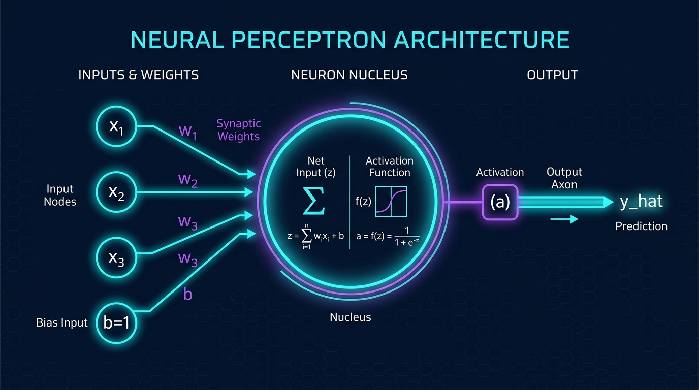
The Perceptron & XOR Boundary Playground
Experience firsthand why Minsky & Papert's 1969 proof halted AI research until Multi-Layer Perceptrons emerged
Non-Linear Activations: Why Linearity Collapses
Without non-linear activations, stacking 1,000 linear layers simplifies to a single matrix multiplication: $W_2(W_1 x) = W_{net} x$
From One Neuron to Deep Networks: Mathematical Representation of MLPs
Deep Feed-Forward Architecture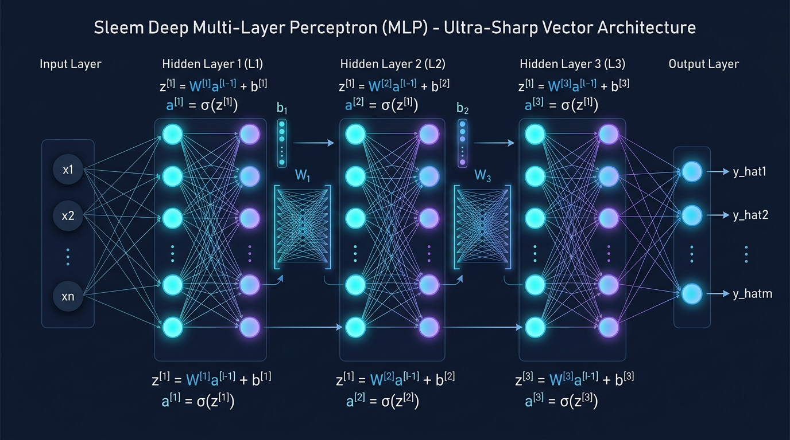
Affine Layer Transformations & Matrix Dimensions
In a multi-layer feed-forward network, each layer $l$ accepts the activation vector $a^{[l-1]}$ from the preceding layer (where $a^{[0]} = x$) and performs a parameterized linear projection followed by an element-wise activation function:
For a layer $l$ containing $n_l$ neurons receiving inputs from layer $l-1$ with $n_{l-1}$ neurons, the dimensions are strictly defined:
- $W^{[l]} \in \mathbb{R}^{n_l \times n_{l-1}}$: Weight matrix mapping activations from layer $l-1$ to layer $l$.
- $b^{[l]} \in \mathbb{R}^{n_l \times 1}$: Bias vector providing an unconstrained threshold translation for each neuron.
- $z^{[l]}, a^{[l]} \in \mathbb{R}^{n_l \times 1}$: Net pre-activation input vector and non-linearly transformed activation output vector.
Universal Approximation & Depth vs. Width
The Universal Approximation Theorem (Cybenko 1989, Hornik 1991): A standard feed-forward neural network with a single hidden layer, finite neurons, and continuous non-linear activation functions can approximate any continuous function on compact subsets of $\mathbb{R}^n$ to arbitrary precision $\epsilon > 0$.
How Networks Learn: The 5-Step Universal Cycle
From a 2-node perceptron to a 70B parameter frontier model, every gradient-based AI system trains on this exact sequence:
Step 1 — Forward Propagation
Convolutional Neural Networks, Recurrent Neural Networks for Sequential Memory & Reinforcement Learning
From pixels to policies: Convolutional Neural Networks (CNNs) extract hierarchical visual features through local receptive fields, while Recurrent Neural Networks (RNNs/LSTMs) capture temporal dependencies in sequences, and Reinforcement Learning agents learn optimal strategies through interaction with environments.
- CNN Hierarchical Vision & ResNets: 2D Convolution $(I * W)$ enforces local receptive fields and spatial weight sharing; ResNet identity skip connections ($y = F(x) + x$) eliminate vanishing gradients, enabling ultra-deep visual representation learning.
- Sequential Recurrence & BPTT Limits: Vanilla RNNs model temporal state transitions ($h_t = \tanh(W_{hh} h_{t-1} + W_{xh} x_t)$), but Backpropagation Through Time (BPTT) suffers from exponential gradient decay across long temporal horizons ($\mathcal{O}(N)$ sequential dependency).
- LSTM Gated Memory Highways: LSTMs resolve temporal degradation by maintaining an additive cell state carousel ($C_t = f_t \odot C_{t-1} + i_t \odot \tilde{C}_t$) dynamically governed by multiplicative Forget ($f_t$), Input ($i_t$), and Output ($o_t$) gating circuits.
- Reinforcement Learning & Bellman Optimality: Autonomous policy optimization maximizes expected cumulative return via the Markov Decision Process (MDP) and Bellman Equation ($V^\pi(s) = \mathbb{E}[r + \gamma V(s')]$), spanning tabula rasa self-play (AlphaZero) to learned world models (MuZero).
Section 3.1 • Vision Processing by CNN
Convolutional Neural NetworksBefore language models, the deep learning revolution was ignited by Convolutional Neural Networks (CNNs). Unlike fully-connected layers that process every pixel independently, CNNs exploit the spatial structure of images through local receptive fields, weight sharing, and hierarchical feature abstraction — learning everything from edges to complex semantic objects.
The Convolution Operation & Feature Maps
A convolutional layer applies a set of learnable filters (kernels) $W \in \mathbb{R}^{k \times k}$ across the input, computing cross-correlations at every spatial location:
Each filter produces one feature map — a 2D spatial response grid detecting a specific pattern. With $F$ filters, the layer outputs $F$ feature maps, capturing $F$ distinct visual primitives.
- Weight Sharing: The same kernel weights are applied at every spatial position, reducing parameters from $O(H \cdot W \cdot C)$ to $O(k^2 \cdot C)$.
- Translation Invariance: A filter detecting a horizontal edge fires regardless of where that edge appears in the image.
- Stride & Padding: Stride $s$ controls spatial subsampling; zero-padding preserves output dimensions.
CNN Architectural Depth: AlexNet to ResNet
Modern CNN architectures stack Conv → BatchNorm → ReLU → Pool blocks into increasingly deep hierarchies:
- AlexNet (2012): First deep CNN to win ImageNet (top-5 error: 15.3% vs. 26.2%). Introduced ReLU, Dropout, and GPU training.
- VGGNet (2014): Demonstrated that deeper networks with small $3 \times 3$ kernels outperform shallower networks with large kernels.
- ResNet (2015): Residual connections $H(x) = F(x) + x$ solved the vanishing gradient problem for networks with 50–152 layers, achieving human-level ImageNet accuracy (3.57% error).
Pooling, Depth Hierarchy & CNN Vision Pipeline
Max Pooling downsamples feature maps by selecting the maximum activation in each local window, achieving spatial invariance and reducing computational cost:
Detect low-level primitives: edges, color gradients, oriented lines, corners.
Compose mid-level features: textures, parts, geometric shapes, local patterns.
Represent high-level semantic concepts: objects, faces, scenes, categories.
Section 3.2 • Sequential Memory: Recurrent Networks (RNNs) & LSTMs
Temporal RepresentationFeed-forward networks assume input tokens are independent. In language and time-series data, meaning depends on temporal context. Recurrent Neural Networks (RNNs) introduce cyclic feedback connections, carrying hidden state $h_t$ forward through time.
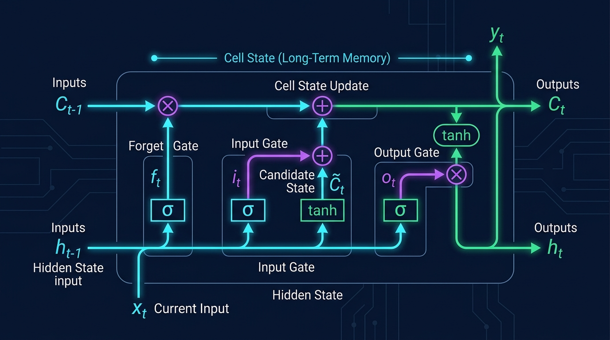
Vanilla RNN & The Vanishing Gradient Dilemma
In a vanilla RNN, the hidden state update is computed as:
During Backpropagation Through Time (BPTT), the gradient of the loss with respect to early hidden states involves a chain of Jacobian matrices:
If the eigenvalues of $W_{hh}$ satisfy $|\lambda| < 1$, the continuous matrix product causes gradients to exponentially vanish as $(|\lambda| \cdot 1)^T \to 0$. As a result, the network cannot learn dependencies spanning more than 10–20 time steps!
The LSTM Solution: Constant Error Carousel (CEC)
Hochreiter & Schmidhuber (1997) resolved this by decoupling long-term memory into an additive Cell State ($C_t$), where gradients flow linearly without exponential decay:
Regulated by three non-linear gating mechanisms:
- Forget Gate: $f_t = \sigma(W_f [h_{t-1}, x_t] + b_f)$ — Discards obsolete context.
- Input Gate: $i_t = \sigma(W_i [h_{t-1}, x_t] + b_i)$ — Admits new incoming information.
- Candidate Memory: $\tilde{C}_t = \tanh(W_c [h_{t-1}, x_t] + b_c)$ — Prospective state vector.
- Output Gate: $o_t = \sigma(W_o [h_{t-1}, x_t] + b_o), \quad h_t = o_t \odot \tanh(C_t)$.
Section 3.3 • Reinforcement Learning: Agent-Environment Interaction
DeepMind MilestonesReinforcement Learning (RL) trains agents to maximize cumulative reward through sequential decision-making. Unlike supervised learning, there are no labeled examples — the agent must explore the environment, evaluate outcomes via a reward signal $r_t$, and learn a policy $\pi(a|s)$ that maps states to actions to maximize long-term return $G_t = \sum_{k=0}^{\infty} \gamma^k r_{t+k}$.
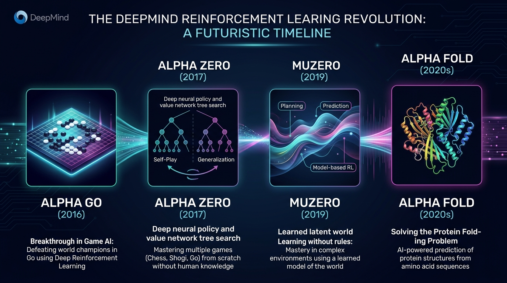
The MDP Framework & Bellman Equation
RL is formally grounded in Markov Decision Processes (MDPs): a tuple $(\mathcal{S}, \mathcal{A}, P, R, \gamma)$ where states $s \in \mathcal{S}$, actions $a \in \mathcal{A}$, transition dynamics $P(s'|s,a)$, and reward function $R(s,a)$ define the environment.
The Bellman Equation expresses the recursive relationship: the value of a state equals the immediate reward plus the discounted value of the next state under policy $\pi$. Deep Q-Networks (DQN) approximate $Q(s,a)$ with a neural network, enabling superhuman Atari performance.
DeepMind's Milestone Trajectory
- AlphaGo (2016): Combined Monte Carlo Tree Search with deep CNNs trained via human expert imitation + RL self-play. Defeated 18-time world champion Lee Sedol.
- AlphaZero (2017): Eliminated human expert data entirely. Mastered Chess, Shogi, and Go from pure self-play — tabula rasa learning from scratch.
- MuZero (2019): Learned a latent world model $p(s'|s,a)$ without knowledge of game rules, planning entirely within a learned abstract representation.
- AlphaFold (2020–): Applied deep network principles to protein structure prediction, solving a 50-year grand challenge in structural biology.
Attention, Scale, and Foundation Models
The Transformer Attention mechanism unlocked parallelizable sequence modeling. Combined with empirical scaling laws and multi-stage alignment pipelines (SFT, RLHF, and DPO), this convergence produced today's frontier foundation models.
- Attention Eliminates Recurrence: Scaled Dot-Product Self-Attention $\text{Softmax}\left(\frac{QK^T}{\sqrt{d_k}}\right)V$ collapses sequential $\mathcal{O}(N)$ recurrence into direct $\mathcal{O}(1)$ pairwise token routing, enabling massively parallel GPU pre-training.
- Multi-Head Subspace Projections: Parallel attention heads project queries, keys, and values into $h$ distinct representation subspaces, captured collectively via output projection $W^O$ to model rich syntactic, semantic, and positional relationships.
- Chinchilla Compute-Optimal Scaling: Empirical power-law scaling dictates that compute efficiency requires scaling training tokens proportionally with model parameters ($D \approx 20 \times N$; $C \approx 6ND$), superseding parameter-bloated recipes.
- The 3-Pillar Alignment Engine: Modern frontier models converge via: 1. Dense Transformer Architecture $\to$ 2. Internet-Scale Self-Supervised Pre-Training ($10^{26}$ FLOPs) $\to$ 3. Multi-Stage Alignment (SFT, RLHF with Reward Modeling, and Direct Preference Optimization DPO).
Section 4.1 • The Attention Concept & The Transformer Model
Vaswani et al., 2017Despite LSTM’s gates, recurrent models suffer from a fundamental architectural flaw: sequential computation. To compute token $t$, the model must finish tokens $1, 2, \dots, t-1$, preventing GPU parallelization. The breakthrough insight was Attention — a mechanism that lets every token directly query every other token simultaneously, collapsing sequential dependencies into a single parallel operation.
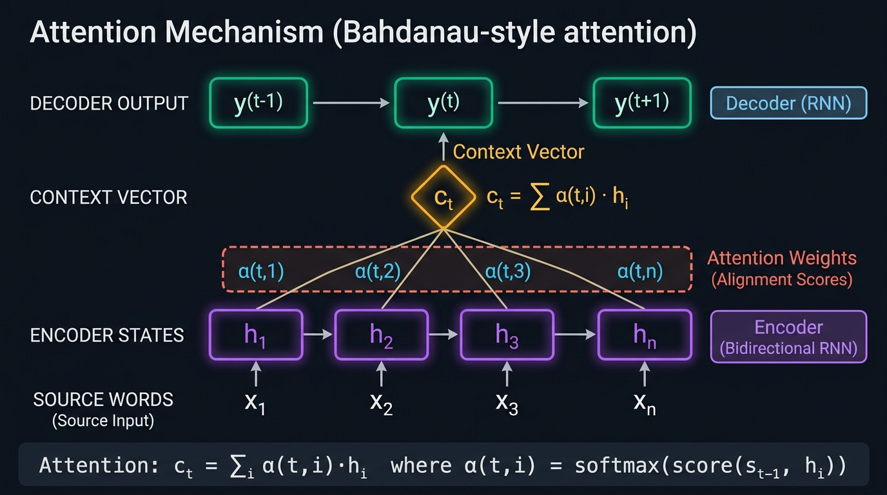
Query, Key, Value Formulation & The $\sqrt{d_k}$ Derivation
Inspired by information retrieval (database dictionary lookups), every token generates three vectors:
- Query ($Q$): What information the current token is seeking.
- Key ($K$): What attributes the candidate token advertises.
- Value ($V$): The actual content information to retrieve.
Why Attention Beats Recurrence
Recurrent models compute sequentially: token $t$ depends on token $t{-}1$, which depends on $t{-}2$, and so on. This creates an $O(N)$ dependency chain that prevents parallelization across the sequence length.
Attention computes all token-pair interactions in a single matrix multiplication, achieving $O(1)$ maximum path length between any two positions. This unlocks full GPU parallelization across the sequence, making large-scale training practical.
- No vanishing gradients across long distances — gradients flow directly between any two tokens.
- Position-agnostic by default — positional encodings are added separately.
- Interpretable — attention weights reveal which tokens the model attends to.
The Attention Matrix Visualizer (Vaswani et al., 2017)
Select any token to inspect its Query-Key dot products and Softmax alignment weights $\alpha_{ij} = \text{Softmax}\left(\frac{q_i k_j^T}{\sqrt{d_k}}\right)$
The Transformer Model — Multi-Head Attention & Architectural Family
Building on AttentionThe Transformer (Vaswani et al., 2017) builds on the Attention concept by running multiple attention “heads” in parallel, each learning different relational patterns — syntax, coreference, semantics — and then stacking encoder/decoder blocks with feed-forward layers and residual connections.
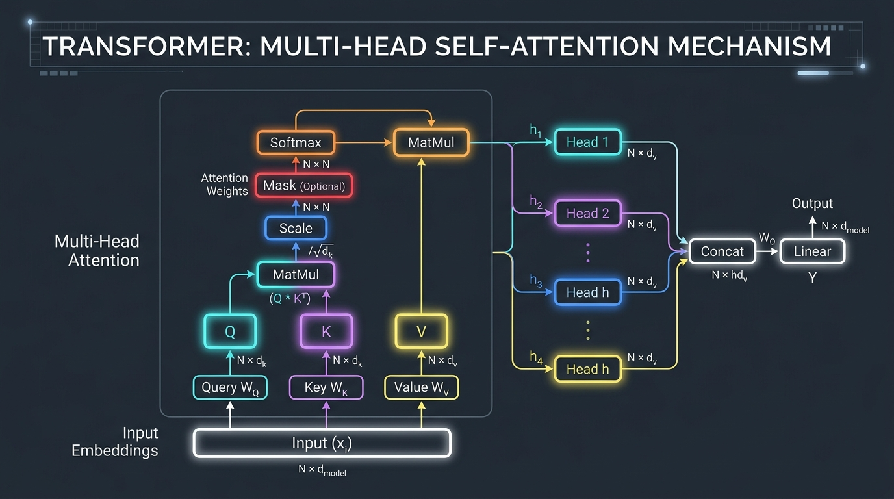
Multi-Head Attention
Instead of a single attention pass, Multi-Head Attention projects $Q, K, V$ into $h$ lower-dimensional subspaces simultaneously, capturing diverse relationship types in parallel:
Each head $i$ computes $\text{head}_i = \text{Attention}(QW_i^Q,\, KW_i^K,\, VW_i^V)$ with its own learned projections, enabling the model to attend to different aspects of the input simultaneously.
The Transformer Architectural Family
By varying which attention patterns are allowed (bidirectional vs. causal), three major Transformer variants have emerged:
- Encoder-Only (BERT): Bidirectional attention over all tokens; excels at classification, search retrieval, and embeddings.
- Decoder-Only (GPT, Claude, Llama): Causal triangular masking ($j \le i$); dominant for autoregressive generation and conversational AI.
- Encoder-Decoder (T5, BART): Bidirectional encoder feeds into a causal decoder via cross-attention; excels at translation and summarization.
Section 4.2 • Scaling Laws & Pre-Training at Frontier Scale
Chinchilla & Compute-Optimal Training~18 Trillion Tokens
Equivalent to ~14 trillion words — centuries of human reading time spanning text, code, video, audio, and mathematical proofs.
~8 Petabytes Uncompressed
Frontier multimodal pre-training corpora (1 PB ≈ 1,000,000 GB), filtered through deduplication and quality heuristics.
$10^{26} - 10^{27}$ FLOPs
Floating-point operations executed during pre-training, driving loss down empirical power-law curves.
Chinchilla Compute-Optimal Frontier Calculator
Hoffmann et al. (2022): For compute-optimal training, dataset tokens must scale 1:1 with model parameters ($D \approx 20 \times N$)
Section 4.3 • Pre-Training, Supervised Fine-Tuning & RLHF Alignment
The 3 Pillars of Modern LLMsFrom Raw Autocomplete to Conversational Agent: The 3 Pillars
Decoder-only Transformers with Rotary Positional Embeddings (RoPE), SwiGLU activations, and Grouped-Query Attention (GQA) for efficient inference KV caching.
Self-supervised Next-Token Prediction: $\max_\theta \sum \log P_\theta(w_t \mid w_{<t})$. Compresses human knowledge, grammar, reasoning, and world modeling into weights.
Supervised Fine-Tuning (SFT) + Reward Modeling + Reinforcement Learning from Human Feedback (PPO/DPO) to instill helpfulness, honesty, and safety.
The Physical Substrate: Silicon to Data Centers
Every mathematical backpropagation gradient and attention matrix multiply must run on physical silicon. Understanding the physical hierarchy — from Streaming Multiprocessors and HBM3 memory to racks, SuperPODs, and megawatt data centers — is vital for modern information engineers.
- Tensor Core SIMD/SIMT Acceleration: NVIDIA H100 Streaming Multiprocessors (SMs) leverage 4th-Gen Tensor Cores executing mixed-precision FP8/FP16 matrix operations ($D = A \cdot B + C$), outpacing latency-optimized CPUs by orders of magnitude.
- The 70× Bandwidth Hierarchy: Interconnect throughput experiences steep physical attenuation across cluster boundaries: 3,352 GB/s (on-chip HBM3) $\to$ 900 GB/s (intra-node NVLink 4.0) $\to$ ~50 GB/s (inter-pod optical InfiniBand fabric).
- Distributed 3D Parallelism & Collectives: Training multi-trillion parameter frontiers requires partitioning workloads across Data, Tensor, and Pipeline Parallelism synchronized via distributed All-Reduce collective communications.
- Megawatt Supercluster Footprint: Aggregating 24,576 GPUs across 8 SuperPODs delivers 24.3 ExaFLOPs of FP8 compute, constrained by power delivery, liquid cooling distribution, and optical switch fabric topologies.
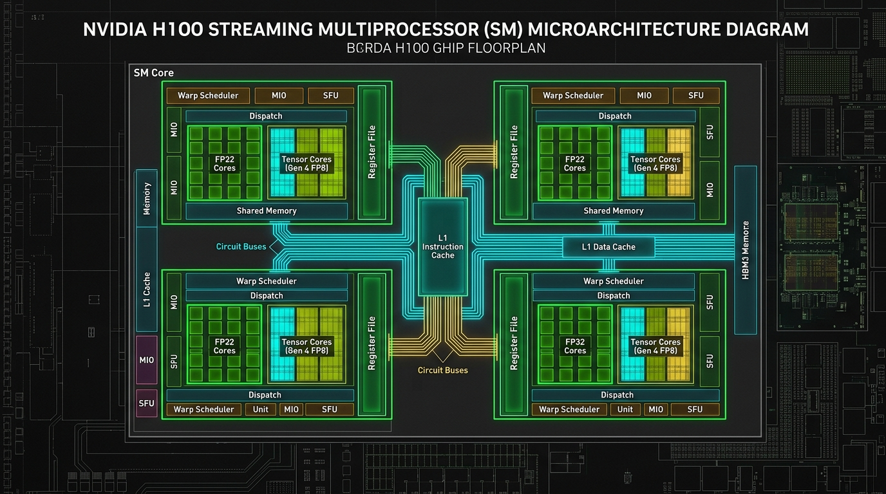
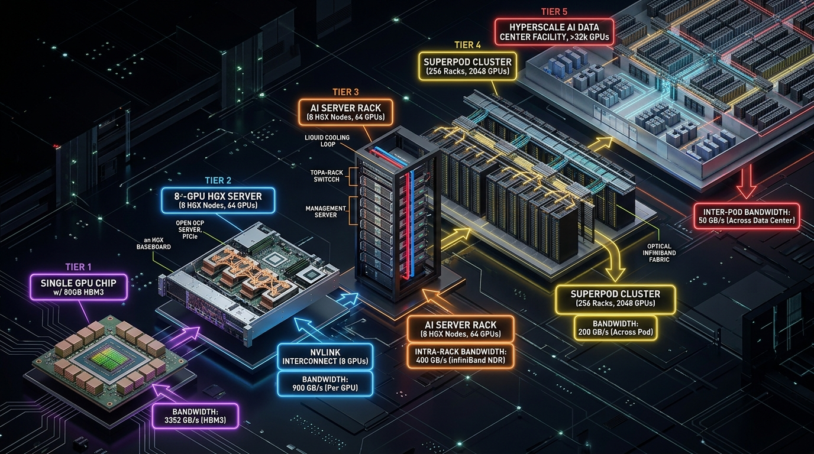
The AI Supercluster Scale Explorer
Step through the 5 physical tiers of frontier AI infrastructure and observe the bandwidth collapse
Agentic AI: Autonomous Goal Pursuit
The theoretical shift from passive input → output to rational agency. An autonomous agent is not just a chatbot; it maintains state, reasons over multi-step horizons, uses external tools, and executes continuous feedback loops to achieve complex real-world objectives.
- From Passive Predictors to Rational Agency: While baseline LLMs operate as passive static functions ($x \to y$), autonomous agents maintain persistent state, reason across multi-step horizons, invoke external tools, and close feedback loops.
- The 4 Pillars of Agent Architecture: Complete agentic systems integrate: 1. Core LLM Reasoning Engine $\to$ 2. Planning & Reflection (ReAct / Tree of Thoughts) $\to$ 3. Dual Memory (In-Context & Vector RAG) $\to$ 4. Tool Execution Sandbox (APIs / Code).
- Russell & Norvig's PEAS Formalism: Rational agent design is grounded in specifying Performance measures, Environmental constraints (stochastic, partially observable), Actuators (API calls, code execution), and Sensors (text, JSON, multimodal streams).
- Error Cascades & Compounding Reliability: Multi-step execution is governed by compounding failure laws ($P_{\text{success}} = p^N$; $0.95^{20} \approx 35.8\%$), mandating deterministic validation, reflection loops, and defensive rollbacks.
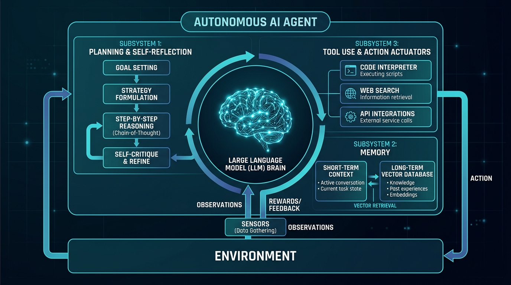
1. Core LLM (Brain)
Central cognitive engine interpreting intent, orchestrating workflows, and generating natural language & code reasoning steps.
2. Planning & Reflection
Decomposes high-level goals into sub-tasks (ReAct, Tree of Thoughts) and performs self-reflection to correct failures.
3. Memory System
Short-term working memory in the active context window + long-term episodic/semantic retrieval via Vector Databases (RAG).
4. Tool Execution
Enables concrete action in the world: sandboxed code execution, web search, SQL databases, and external REST APIs.
Interactive Agentic Loop Simulator: Plan → Execute → Evaluate → Reflect
Step through the real-world Quicksort debugging task from Section 19 of the companion report
The PEAS Rational Agency Framework
Drawn from Russell & Norvig's canonical AI textbook, replacing passive input/output:
- P (Performance Measure): Objective metric defining success (e.g., unit test pass rate, code latency, portfolio Sharpe ratio).
- E (Environment): The operational world (file system, code sandbox, web browser, database).
- A (Actuators): Tools the agent commands to alter state (bash interpreter, HTTP requests, git commit).
- S (Sensors): Feedback channels perceiving results (stdout, stderr, compiler tracebacks, DOM trees).
Real-World Agentic Bottlenecks
Current engineering limitations preventing frictionless deployment:
- Compounding Error Cascades: A 5-step agent with 95% step reliability only succeeds $0.95^5 \approx 77\%$ of the time. At 20 steps, reliability plummets to 35%!
- Lack of Sensory Grounding: Pure language models lack physical intuition, spatial physics, and continuous motor control.
- High Latency & Inference Cost: Multi-turn reflection loops can consume tens of thousands of tokens per task.
- Server & Cloud Dependencies: Autonomous agents rely on constant multi-gigabit access to centralized GPU data centers.
Physical AI: Embodied Systems & The Material Frontier
Transitioning artificial intelligence from manipulating virtual text and digital pixels into embodied physical reality. Physical AI governs systems that perceive, reason, and actuate in continuous 3D environments subject to the immutable laws of classical mechanics, gravity, friction, and contact dynamics.
- The Physical Embodiment Shift: Moving from digital software sandboxes into continuous 3D reality requires reasoning under immutable physical laws — classical mechanics, gravity, friction, and non-linear contact dynamics.
- Deterministic Low-Latency Control (<10ms): Physical robotics mandates 100Hz–1000Hz deterministic closed-loop feedback, necessitating high-throughput on-robot edge silicon (e.g. NVIDIA Jetson Thor) rather than variable-latency cloud APIs.
- Vision-Language-Action (VLA) Unification: Models like RT-2, OpenVLA, and Octo tokenize continuous robot motor trajectories into the vocabulary space of foundation models, transferring internet-scale semantic reasoning directly to physical actuation.
- Sim-to-Real Transfer via Massive Simulation: GPU-accelerated physics engines (NVIDIA Isaac Sim / Isaac Gym) simulate tens of thousands of parallel environments with domain randomization, bridging the reality gap for robust zero-shot physical deployment.
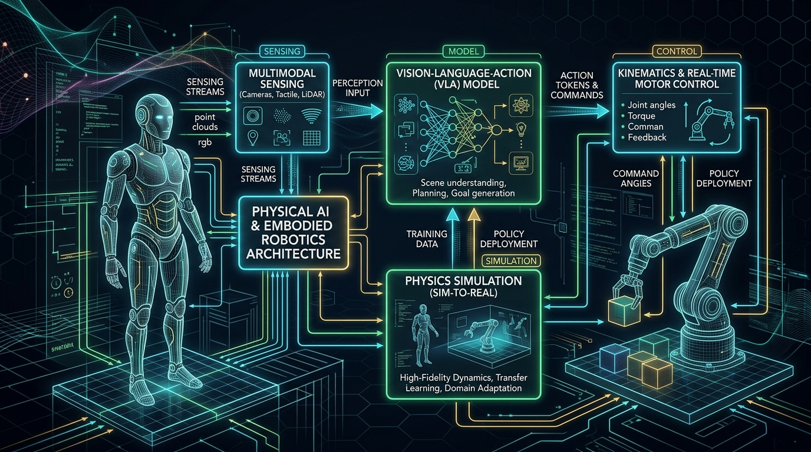
The Six Core Conditions & Engineering Pillars of Physical AI
Deploying autonomous intelligence into physical embodiment demands solving six rigorous engineering conditions that do not exist in digital software:
Fusing asynchronous sensor feeds: calibrated RGB-D cameras (geometric depth), LiDAR (volumetric point clouds), tactile sensor arrays (shear and normal contact force), 6-axis force-torque wrist sensors, and high-frequency joint encoders.
While a chatbot can tolerate a 1,500ms response delay, a bipedal humanoid robot falling over will impact the ground within 200ms. High-frequency impedance control and balance stabilization require deterministic 100Hz–1000Hz motor control loops.
Mapping operational task coordinates $(x, y, z)$ to joint space $\theta$ via Forward Kinematics ($FK$) and non-linear Inverse Kinematics ($IK$). Analyzing motion velocities and actuator torques using the operational Jacobian matrix $J(\theta)$.
Gathering physical robot training data is prohibitively slow and hazardous. High-fidelity GPU physics simulators (NVIDIA Isaac Sim, MuJoCo) simulate billions of interaction steps with aggressive domain randomization to cross the reality gap.
Pioneered by RT-1, RT-2, and OpenVLA: tokenizing continuous end-effector actions into discrete token vocabularies. Allows pre-trained internet knowledge to guide complex physical tasks like "pick up the fragile ceramic mug".
Humanoids cannot trail a 10kW high-voltage cable to a server rack. Inference must run on self-contained battery power within strict 50W–300W budgets using specialized edge silicon (NVIDIA Jetson Thor, Drive Thor).
Interactive Physical AI Kinematics & Safety Lab
Test 2-Link Planar Forward Kinematics, Analytical Jacobian $J(\theta)$, End-Effector Tracking, and Workspace Safety E-Stops
Synthesis: AI as High-Order Value Creation
The closing thesis of the curriculum: AI is not merely an accelerated search engine for one-question, one-answer interactions. Its transformative economic value lies in autonomous processes, multimodal generation, and reusable cognitive systems.
- Beyond the Q&A Search Fallacy: Treating generative AI merely as an accelerated search engine fails to harness its transformative capability; real economic leverage stems from autonomous workflows, scheduled tasks, and proactive multimodal generation.
- High-Order Value & Compound Assets: Strategic differentiation transitions from ephemeral prompt interactions to proprietary cognitive systems that compound enterprise memory, multi-agent collaboration, and specialized tool ecosystems.
- The Architectural Synthesis: The entire conceptual arc — from Shannon information entropy and backpropagation to billion-parameter transformers, GPU superclusters, autonomous agents, and physical embodiment — forms a unified, multidisciplinary engineering discipline.
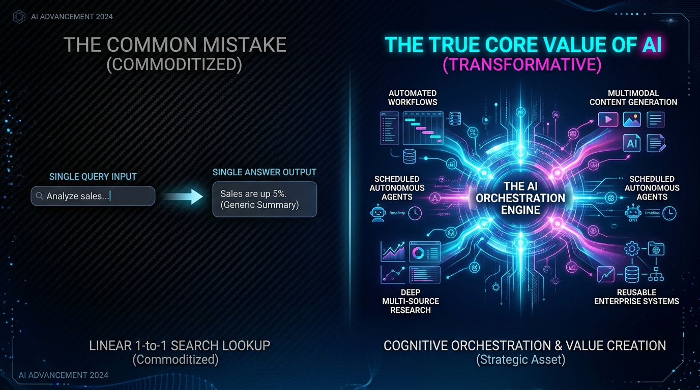
Course Checkpoint Quiz
Test your understanding across all 7 parts of the companion curriculum. Questions are drawn directly from the academic discussion checkpoints.
Searchable Key Terms Glossary
Authoritative definitions drawn from Appendix A of the Companion Report
Primary References & Course Deck Sources
- Vaswani, A., et al. (2017). "Attention Is All You Need." Advances in Neural Information Processing Systems (NeurIPS 30).
- Shannon, C. E. (1948). "A Mathematical Theory of Communication." Bell System Technical Journal, 27(3), 379–423.
- Kaplan, J., et al. (2020). "Scaling Laws for Neural Language Models." arXiv:2001.08361.
- Hoffmann, J., et al. (2022). "Training Compute-Optimal Large Language Models." DeepMind (Chinchilla). arXiv:2203.15556.
- Russell, S., & Norvig, P. (2020). "Artificial Intelligence: A Modern Approach" (4th ed.). Pearson.
- Silver, D., et al. (2016/2017). "Mastering the game of Go without human knowledge" (AlphaGo Zero). Nature, 550, 354–359.
- Schulman, J., et al. (2017). "Proximal Policy Optimization Algorithms." OpenAI. arXiv:1707.06347.
- NVIDIA Architecture Whitepapers (2022–2025). "NVIDIA H100 Tensor Core GPU Architecture & NVLink 4.0 Specifications."
Intelligence Without Representation
RT-2: Vision-Language-Action Models Transfer Web Knowledge to Robotic Control
Diffusion Policy: Visuomotor Policy Learning via Action Diffusion
Isaac Gym & Isaac Sim: High-Performance GPU-Based Physics Simulation for Robot Learning
Comprehensive Academic Reference Archive
A curated collection of the seminal papers, foundational mathematical treatises, industry architectural whitepapers, and landmark literature underpinning this curriculum. Curated and reviewed by Prof. Liang Li.
- 75+ Years of Intellectual Provenance: Modern foundation models and agentic breakthroughs stand upon decades of peer-reviewed mathematical treatises — from Shannon (1948) and Minsky (1969) to Vaswani (2017) and Chinchilla (2022).
- Empirical & Architectural Milestones: Traces the seminal inflection points of AI: Perceptron limitations, Backpropagation, Deep Residual Networks, Scaled Dot-Product Attention, and Compute-Optimal Scaling Laws.
- Curated Academic Pedigree: A comprehensive reference archive of 24 seminal papers and industry architectural whitepapers curated by Prof. Liang Li to bridge theoretical proofs with real-world production systems.